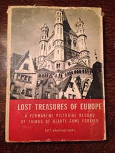
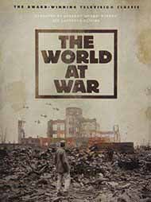
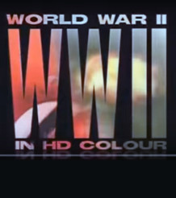

Lost Treasures of Europe, Henry- Ed. LaFarge
Hard to find, but worth looking for, this book is a classic with tremendous nostalgic value showing Europe well before the devastation of the war. Photographs, 427 of them, showing the architectural art treasures of Poland, Holland, Belgium, Russia, England, Italy, France, Germany, Austria and Hungary. There are few photographs of bombed views, instead pre-war scenes are shown, which survive now chiefly in memory. Numbers refer to descriptive paragraphs telling what happened, what was destroyed completely and what was/is capable of restoration. An introductory chapter describes the cooperative efforts of the allied nations to save as much as possible of Europe's heritage.

The World at War
Created by Jeremy Isaacs. More than 30 years after its initial broadcast, The World at War remains the definitive visual history of World War II. Narrated by Academy Award bnwinner Laurence Olivier and digitally re-mastered for DVD, this is epic history at its absolute best. Informative and unbiased, THE WORLD AT WAR is the recipient of numerous accolades, including an International Emmy Award, The National Television Critic's Award for Best Documentary, and knighthood for its creator, Sir Jeremy Isaacs.
Learn more here.

World War II In Color
World War II In Colour is a 13-episode television documentary series recounting the major events of World War II narrated by Robert Powell. The show covers the Western Front, Eastern Front, North African Campaign and the Pacific War. The series is in full colour, combining both original and colourised footage. It was made by World Media Rights in 2008/2009.
Learn more here.

Band of Brothers (Based on a true story)
An acclaimed series from HBO. Drawn from interviews with survivors of Easy Company of the US Army's 506th Infantry Regiment, as well as their journals and letters; Band of Brothers chronicles the experiences of these men from paratrooper training in Georgia through the end of the war.
Learn more here.
The Rape of Europa
The Rape of Europa: The Fate of Europe's Treasures in the Third Reich and the Second World War. A book by Lynn H. Nicholas. This book was the inspiration for the documentary film by the same name. Ms. Nicholas was well-known for her knowledge of these events.
US National Archives
World War Two resources from the US National Archives.